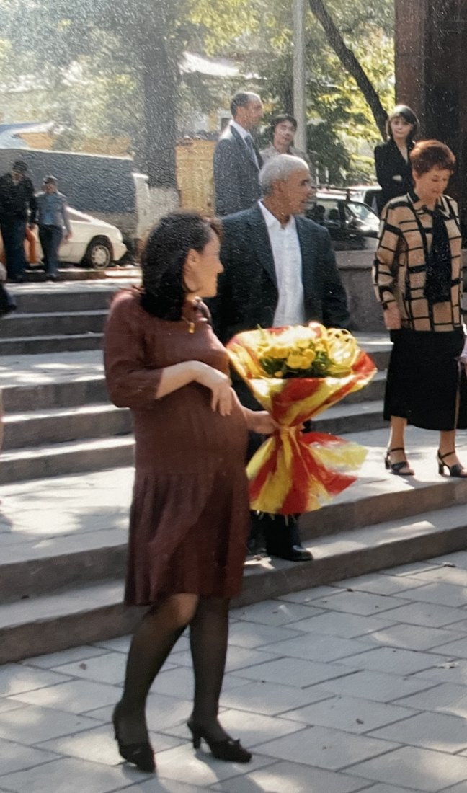
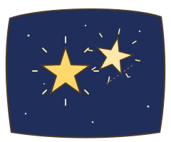

a chapter excerpt from The Wind Girl
🗺️ The Map and the Road

waiting for you
When she was little, I held her hand and led her by the map. I knew the roads: school, money, “this is how it must be.” I was both her mother and her father — first in my own country, then in a new one. And my worry often walked ahead of us both.
Only later did I understand: a map gives direction, but not the road. In the dark, a child doesn’t feel the path. She feels whether the one holding her hand believes in her.
I did. Always. I just didn’t always know how to show it.

3 years old 😊

family, summer

running ahead
The night before her birthday, the Wind came.
“Are you still holding her hand?” it asked.
“No. I let go.”
“Then why is your palm still warm?”
“Because letting go is not the same as no longer loving.”
“But you collided,” said the Wind. “I saw it.”

“We are two stars. Once we were one light. That is what happens to stars that burn too brightly to simply stand side by side. A collision is love too: stars don’t go out from it, new light is born. Now each of us has her own orbit, and that is how it should be.”
The Wind was quiet for a while.
“So you no longer hold her, and you no longer lead her.”
“Love doesn’t hold on, and it doesn’t lead. Love gives the right simply to be.”
“Then in the morning I’ll pass by her window. I won’t say a word. I’ll just bring the warmth.”
“Yes,” I said. “Just like that.”

her own orbit: her drawing

her light
if this touched you, leave a heart 🤍
tap as many times as you like